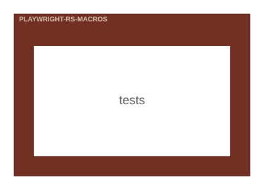

playwright-rs-macros
Compile-time-validated selector macros for [playwright-rs].

Modules
Used by
| Kind | Source | Items | Technology |
|---|---|---|---|
| uses | playwright_rs | locator |
Compile-time-validated selector macros for [playwright-rs].

| Kind | Source | Items | Technology |
|---|---|---|---|
| uses | playwright_rs | locator |